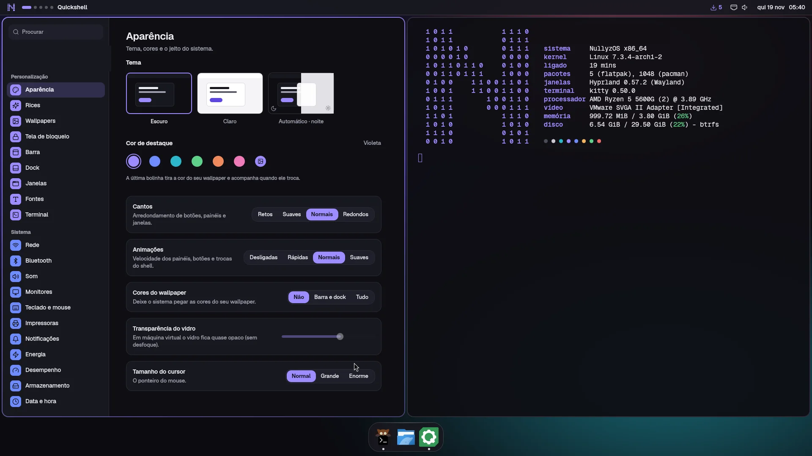

Visão geral
O que é o NullyzOS, do que ele precisa e o que vem nele.

NullyzOS é um sistema baseado em Arch Linux, pronto para usar. Você escolhe o desktop, Hyprland ou KDE Plasma, e o visual. Depois troca quando quiser, e um clique desfaz.
O que vem nele
Requisitos
Ver o passo a passo de instalação
Rices
Um rice muda o sistema inteiro de uma vez. Escolha um para ver como fica:
Rices da comunidade
Temas de outras pessoas, revisados e com crédito. São baixados do repositório do autor, numa versão travada e conferida, só quando você escolhe aplicar.
Para trocar, abra Configurações, Rices e clique em "Usar este". Não gostou? Desfazer volta tudo. Pelo terminal:
nullyzos-rice aplicar nullyz-musgoHyprland ou KDE
Janelas lado a lado ou soltas, tudo pelo teclado se quiser. Cerca de 790 MiB de memória depois do login. Todos os rices.
Para quem gosta de teclado e leveza.
Janelas soltas, menu global e os apps do KDE, com as Configurações do NullyzOS. Cerca de 1 GB depois do login.
Para quem quer tudo familiar.
Atalhos
No Hyprland. No KDE valem os atalhos do próprio Plasma.
Perguntas
É de graça?
Sim. O código é aberto (GPL-3.0) e está no GitHub.
Posso usar no dia a dia?
É a primeira versão pública. Funciona, mas tenha backup dos seus arquivos antes de instalar.
Preciso saber Linux?
Não. O que se usa no dia a dia tem tela própria nas Configurações, em português.
Onde instalo programas?
Na loja de apps (Flathub) ou pelo pacman, dos repositórios oficiais do Arch. O NullyzOS não usa o AUR.
Achei um problema. E agora?
Abra uma issue no GitHub com o modelo do computador e o que aconteceu. Falha de segurança vai pelo aviso privado.